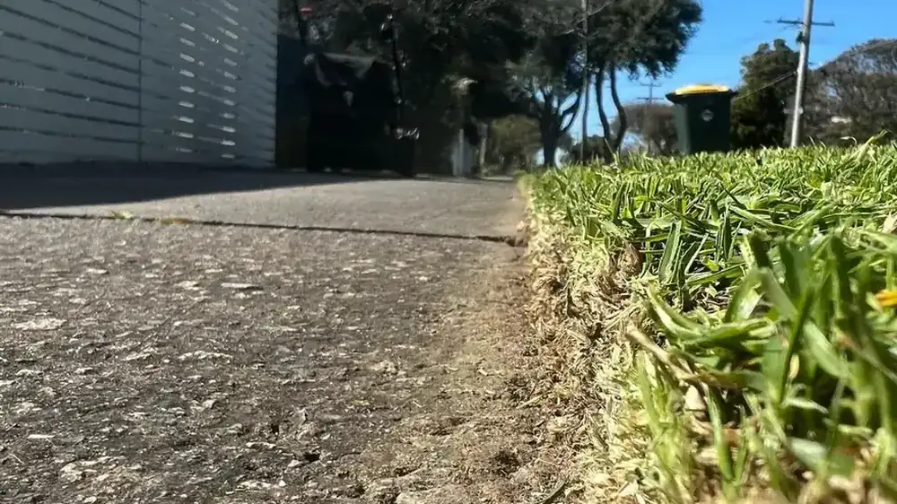

Lawn Mowing Frankston
Precision cutting, edging and green-waste removal on a weekly or fortnightly schedule. We match the mowing height to your grass type and the season for a healthy, striped, professional finish every visit.
Explore lawn mowing →